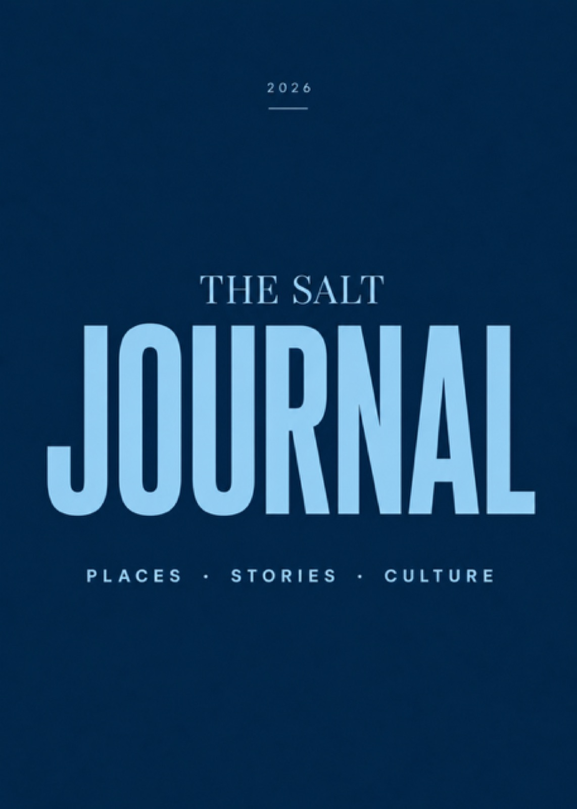
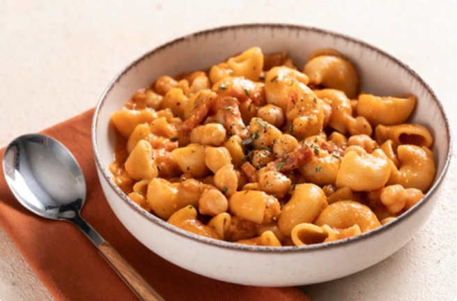
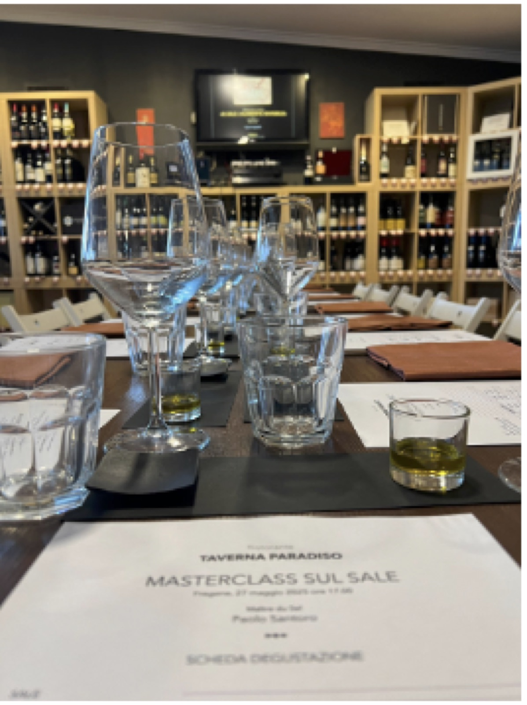
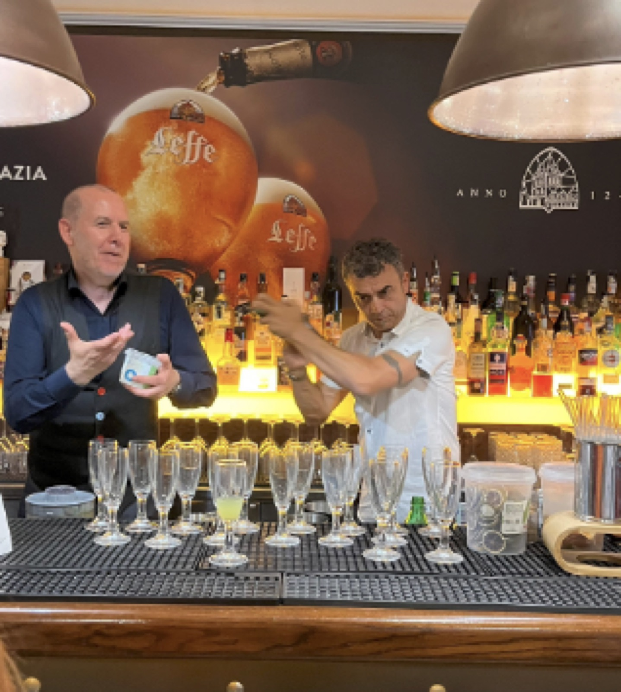

Welcome to the salt world
Take your life with a pinch of salt.
Il sale come strumento di narrazione contemporanea. Brand, persone e territori raccontati attraverso l'elemento più antico del mondo.


Il sale come strumento di narrazione contemporanea. Brand, persone e territori raccontati attraverso l'elemento più antico del mondo.

Ma il sale, a dire il vero, è anche un linguaggio, in senso universale e in senso personale, capace di mettere in relazione le persone, i luoghi e il tempo — esattamente ciò che questo spazio vuole fare.
THE SALT. è un progetto culturale ed editoriale che attraversa il presente in modo neutrale, con una visione lucida sul futuro e avendo come faro il passato, la storia. Incontra diverse forme di Umanità Creativa e di Arti con strumenti «antichi»: scrittura, voci, suoni… per parlare di persone, di luoghi, di istituzioni e di aziende.
THE SALT. infine, è uno spazio aperto in continuo movimento. Un luogo dove si potrà incontrare il «saper fare italiano». Buon sale a tutti!
Paolo Santoro, pugliese di Taranto, vive tra Roma e Grosseto. Dopo la laurea in Scienze Economiche e Bancarie all'Università degli Studi di Siena, fonda Beep Studios, con cui realizza il doppiaggio di documentari e serie TV per le principali major internazionali.
Nel 2015 lascia il mondo del broadcast per dedicarsi allo studio e alla divulgazione del sale artigianale. Sommelier AIS, Cavaliere del Sassicaia e gourmand appassionato, è oggi considerato tra i maggiori esperti di sale a livello mondiale.
Scrittore, è autore del romanzo Il Sale del Führer e dell'atlante sul sale THE SALT. Elogio al sale, l'alimento invisibile.
Una piattaforma editoriale in continua evoluzione: pensieri, immagini, incontri e racconti su territori, persone, prodotti, artisti e artigiani d'Italia — con il sale come chiave di lettura del mondo.

Benvenuti nel primo articolo di THE SALT JOURNAL. Due forze invisibili che hanno influenzato profondamente il mio percorso di vita. Proprio come il sale.
Esperienze costruite intorno al sale: formazione, narrazione, gusto e identità di marca.
Assaggi guidati: ogni incontro è un viaggio attraverso tipologie, origini e metodi.
Formazione tecnica di alto livello per sale, sommelier e professionisti dell'hospitality.
Approfondimento culturale e strategico: il sale come chiave di lettura del presente.
Un racconto che prende forma attraverso il sale: narrazione e degustazione si intrecciano.
L'incontro tra cucina, narrazione e ospitalità contemporanea, su misura.
Narrative branding immersivo per design, architettura, fashion e hospitality.
Un percorso costruito attraverso formazione, cultura, ospitalità, storytelling e brand narrative.





Da ottobre 2026 partirà THE SALT PEOPLE: un podcast dedicato alle diverse forme di umanità creativa — artisti, artigiani, imprenditori, chef, ricercatori, visionari e persone che, attraverso il proprio lavoro e le proprie scelte, contribuiscono a lasciare un segno nel mondo.
Nasce dall'incontro tra la mia attività di narratore e divulgatore e un'esperienza di oltre venticinque anni nel mondo del broadcast audio, del doppiaggio e della produzione di contenuti. Un ritorno alle origini, reinterpretato attraverso uno degli strumenti più interessanti della comunicazione contemporanea.
Ogni episodio sarà un viaggio dentro una storia autentica: non semplici interviste, ma conversazioni capaci di esplorare percorsi umani, professionali e creativi. Un format che unirà una dimensione itinerante, nei luoghi delle storie raccontate, a una in studio dedicata all'approfondimento.
The Salt People. Voci e suoni di umanità creativa.
Raccontaci la tua idea e costruiremo insieme un evento su misura, dalla scelta del format ai dettagli operativi.
Contattaci